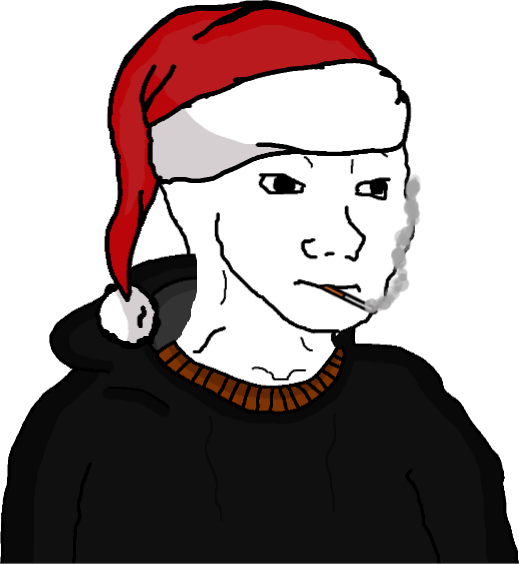

Acerca de mí
¡Bienvenido a mi pagina web! Acá vas a saber más sobre mí
Me llamo Kevin Schlundt, nací en la Provincia de Buenos Aires, para ser exactos en la ciudad de San Miguel y vivo en Tigre, tengo 22 años y me gusta mucho la programacion.. en un fúturo no muy lejano voy a trabajar de esto ya que me apasiona muchisimo, en un puesto de QA Engineer o IT, pero en un buen puesto seguro Jeje.
